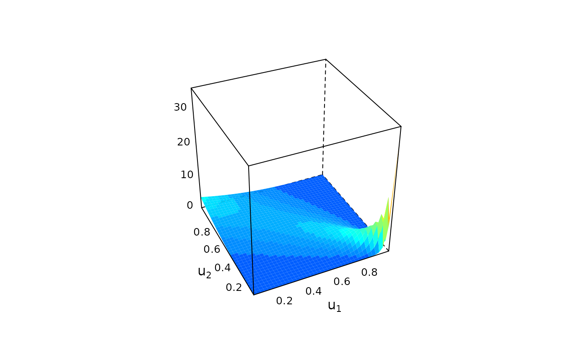
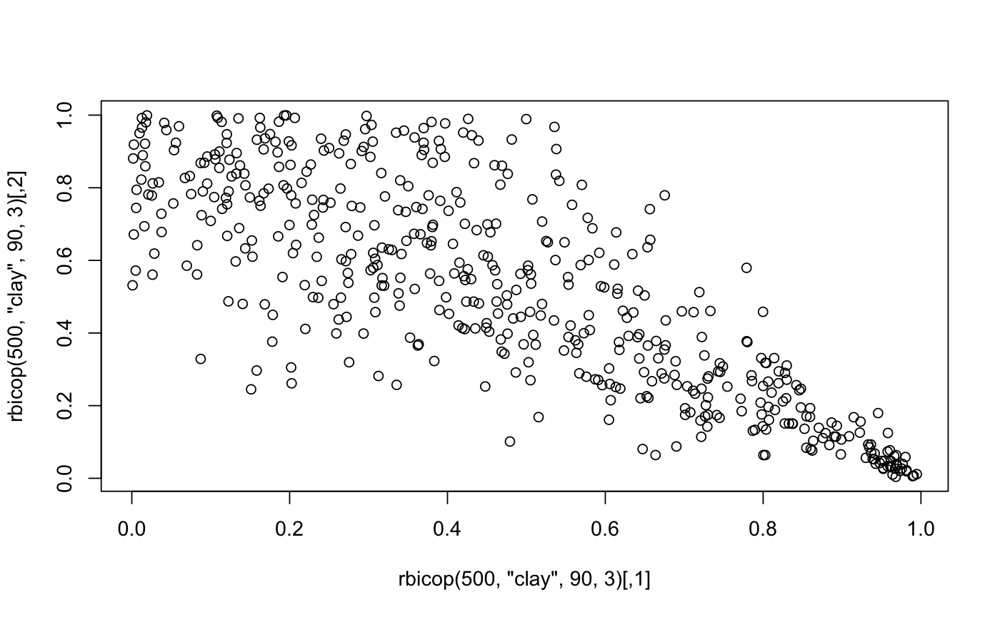

Create custom bivariate copula models by specifying the family, rotation, parameters, and variable types.
Arguments
- family
the copula family, a string containing the family name (see Details for all possible families).
- rotation
the rotation of the copula, one of
0,90,180,270.- parameters
a vector or matrix of copula parameters.
- var_types
variable types, a length 2 vector; e.g.,
c("c", "c")for both continuous (default), orc("c", "d")for first variable continuous and second discrete.
Value
An object of class bicop_dist, i.e., a list containing:
family, acharacterindicating the copula family.rotation, anintegerindicating the rotation (i.e., either 0, 90, 180, or 270).parameters, anumericvector or matrix of parameters.npars, anumericwith the (effective) number of parameters.var_types, the variable types.
Details
Implemented families
| type | name | name in R |
| - | Independence | "indep" |
| Elliptical | Gaussian | "gaussian" |
| " | Student t | "t" |
| Archimedean | Clayton | "clayton" |
| " | Gumbel | "gumbel" |
| " | Frank | "frank" |
| " | Joe | "joe" |
| " | Clayton-Gumbel (BB1) | "bb1" |
| " | Joe-Gumbel (BB6) | "bb6" |
| " | Joe-Clayton (BB7) | "bb7" |
| " | Joe-Frank (BB8) | "bb8" |
| Extreme-value | Tawn | "tawn" |
| Nonparametric | Transformation kernel | "tll" |
See also
bicop_dist(), plot.bicop(), contour.bicop(), dbicop(),
pbicop(), hbicop(), rbicop()
Examples
## Clayton 90° copula with parameter 3
cop <- bicop_dist("clayton", 90, 3)
cop
#> Bivariate copula ('bicop_dist'): family = clayton, rotation = 90, parameters = 3, var_types = c,c
str(cop)
#> List of 5
#> $ family : chr "clayton"
#> $ rotation : num 90
#> $ parameters: num [1, 1] 3
#> $ var_types : chr [1:2] "c" "c"
#> $ npars : int 1
#> - attr(*, "class")= chr "bicop_dist"
## visualization
plot(cop)

contour(cop)
plot(rbicop(200, cop))

## BB8 copula model for discrete data
cop_disc <- bicop_dist("bb8", 0, c(2, 0.5), var_types = c("d", "d"))
cop_disc
#> Bivariate copula ('bicop_dist'): family = bb8, rotation = 0, parameters = 2, 0.5, var_types = d,d